Goodreads Book Page Redesign
A 6-week user research project
Goodreads is the world’s largest site for readers and book recommendations. It was first launched in 2007 and has gained 125 million users as of 2022.
After researching users and personally using the Goodreads app on android to discover new books and read up on reviews, it was realized that the app was outdated and lacked accessibility for users with sensory processing disorders, trauma disorders, and screenreaders.
These issues were identified due to the presence of moving images close to text within comment sections, the lack of content warnings for books with common traumatic themes, and the lack of alternative text when it came to pictures, images, and icons.
The goal of this redesign is to incorporate a preferences section within the settings to allow users to block specific content, authors, and tags; allow users to disable moving images; and incorporate a more accessible rating/review feature to assist in screenreader accessibility.
UX, UI Designer
6 weeks
Redesign the book page for accessibility
Figma & Plugins, Figjam, Google Forms

Empathize
To better understand Goodreads's background, users, and uses, I started by conducting research with the following goals in mind:
- Understand Goodreads's history, appeal, and services offered
- Determine Goodreads's community and which users are most active
- Identify Goodreads's competitors and evaluate their strengths and weaknesses
- Discover goals, needs, and frustrations of readers using Goodreads
I analyzed Goodreads, along with it's top competitors to evaluate their strengths and weaknesses. This information helped me to understand the trends across all competitors, their unique features, and why users might choose a particular service over another.
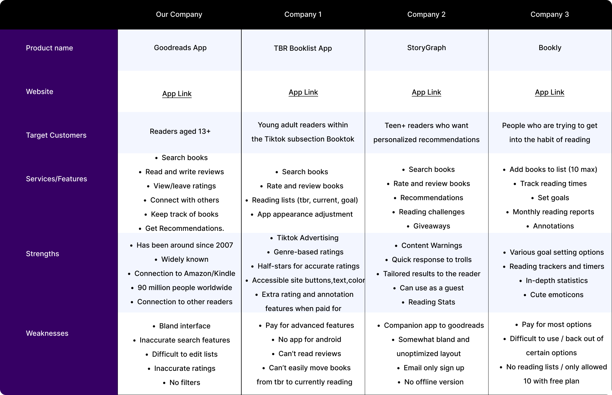 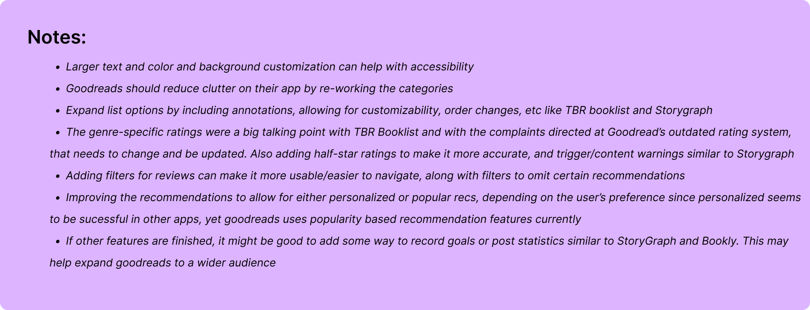
To gain an understanding of accessibility issues that are being encountered by Goodreads users, I conducted secondary research via TikTok videos, Reddit posts, and Quora discussions. The following are a summary of findings:
Sensory Processing
- Moving images (gifs) in reviews causes nausea and difficulty reading
- App is always in light mode, which is hard to look at
Screen Readers
- Images and icons do not use alternative text and cannot be transcribed
- Some icons and fonts were too small to find or click
PTSD, CPTSD, and other trauma related issues
- Lack of content or trigger warnings causes users to be blindsided when reading
- Unable to guage genre potency, unsure how dark a book labelled 'dark' will be
Dyslexia, and other learning disabilities
- Goodreads librarian quiz does not allow extra time or accommodations to those in need
To learn about users' personal experiences with discovering books and Goodreads, I conducted user interviews. I interviewed 5 people between the ages of 18-25, for about 15-20 minutes each, asking open-ended questions to learn as much as possible about Goodreads's users and their experiences. These are the main takeaways from the interviews:
Most used features
- Ratings and reviews (before and after reading)
- Lists (keep track of books, stay organized)
- Discover (find new books to read)
Unused features
- User posts
- Search by Genre
- Friends and Groups
- Reading challenge
- Giveaways
Frustrations
- Unable to use app as a guest
- Top Picks recommends popular books, not personalized ones
- App lags and has long loading times
- Can't translate reviews from different languages
- Errors within the app log out users
- Android app hasn't been updated compared to iphone
Other apps used
- ReadEra - no account needed, can keep track of books in one place
- Kindle app - brighter color layout, gives personalized recommendations
- Libgens - good for textbooks, simple to search, information is simply presented
Things to Update
- Bland interface
- Plain and outdated layout
- App needs new users, not mainstream
- Broken app mechanics
Desired Features
- Color customization and background options
- Text size and font selection
- Home page customization
- Quick links to navigate faster
- Content, trigger, or age warnings
- Genre ratings for accuracy
- Text to speech for audiobook readers
- Filter out spoilers in reviews
Using what was learned from both secondary research and interviews, a user persona was created to accurately represent who is being designed for. This persona and scenario helped guide my decisions along the design process to make sure the solution I am designing is centered on our user and their experiences. Without further ado, meet Amy:
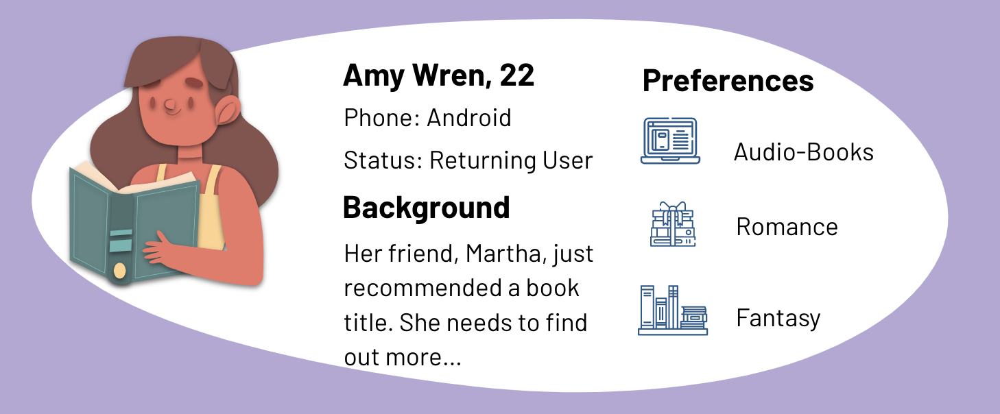
Using the data from interviews concerning most and least used features, along with observing users interact with app, a general user flow was put together to identify a limited number of possible paths a user can take. This user flow helps to visualize which interactions need to be focused on and reflected in a prototype. After laying out the interactions, it was concluded that working on the book page interactions (description, rating, reviews, stores, related) should be made a priority.

With Amy's user persona in mind, and the insights gained from research, it was now possible to identify what the main problems are that need to be solved. Putting together the users' frustrations, wants, and needs, a user journey map was created to better understand the problem from the user’s perspective.
The scenario is as follows: Amy is an American young adult who enjoys reading as a past time. She heard about a new pirate romance book from her friend that sounded interesting, and turned to the goodreads app to learn more. Amy wants to know if this book will be a good fit for her, and if so, she would like to learn where she can get the book. When finished, she’d like to post a review and rate it.
User goals and expectations:
- Easily log back into Goodreads
- Locate search bar to find books
- Find book in the top searches
- View the book's page to learn about it
- Read spoiler-free reviews and ratings
- Learn how to buy the book
- Buy, read, and review the book
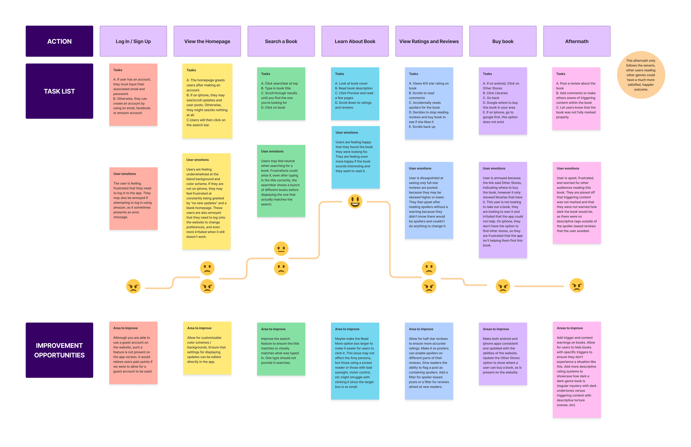
Define and Ideate
The Goodreads App for Android is not accessible to those with senory processing disorders, ptsd, cptsd, other trauma disorders, or to those with screenreaders due to it's lack of customizability, content warnings, and layout.
After brainstorming different ways to achieve user needs and goals, a list of potential app features was created. By utilizing a 2x2 matrix, these features were sorted based on relevency and impact.
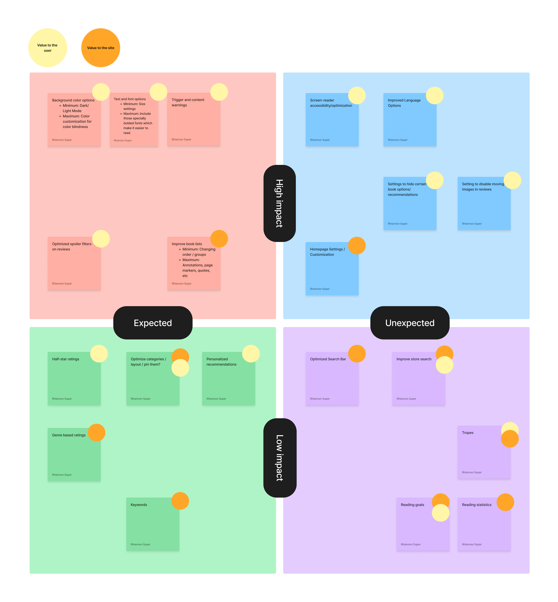
This application map aims to follow the reimagined Goodreads site using prioritized features at their most basic level (minimum viable for use). While creating the map, it was noted that the app had many branching and crossing pathways, which opened too many options for users to click on. This caused excess clutter on the application and difficulty for users. This map eliminated some of those routes in hopes of creating a better user experience.

Putting together everything that was learned, I was able to create some low fidelity wireframe sketches which would allow me to visualize a final rendition and make informed decisions on how to design the different screens and features that would help our users fulfill their needs and meet their goals.
 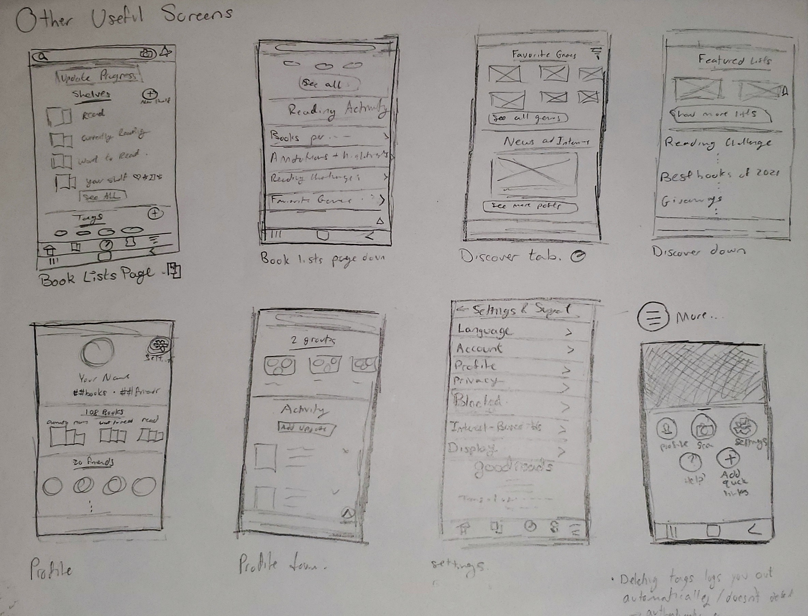
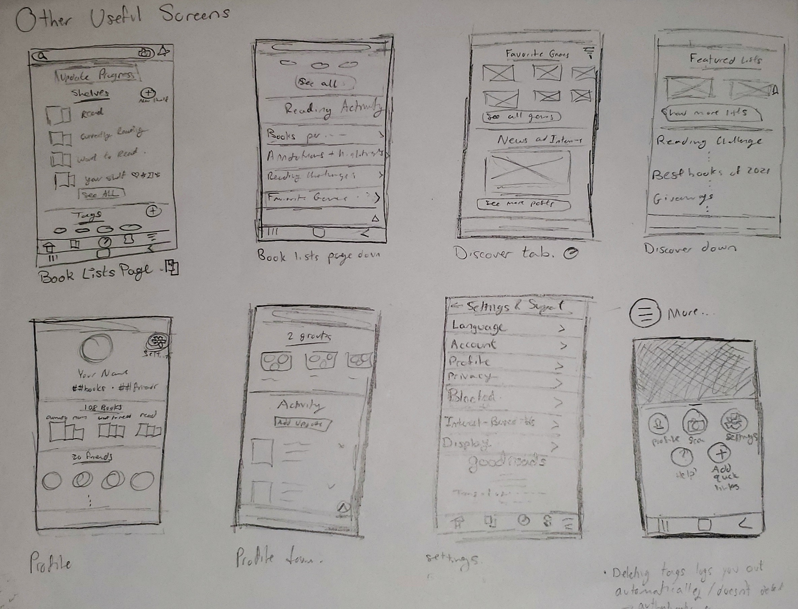
Prototype and Test
The first set of high fidelity wireframes were created based on the wireframe sketches and attempted to incorporate early designs for the prioritized features. Below is the figma file displaying these wireframes with annotations.
The first set of wireframes were then improved upon by cleaning up the interface, updating the color schemes and icons, and making the wireframes interactive for user testing. The updated set of wireframes are shown below:
Usability Testing Overview
- Method: In-person, Moderated, Asssessment
- Participants: 5
- Age: 19-22
- Average Time: 5 minutes
- Task Completion Rate: 100%
Summary of Feedback
- User flow was intuitive
- Rating system was confusing, needed to be more universal
- Buttons should be made larger
- Should be more obvious what can be clicked
- Condense the pages more, still too crowded
- Some text was too light
Based on the feedback from user testing, revisions to the second set of wireframes were made. The color scheme, navigation bar, buttons, and text were updated to follow user suggestions. The preferences tab and book page were also condensed. These final high fidelity wireframes are displayed below:
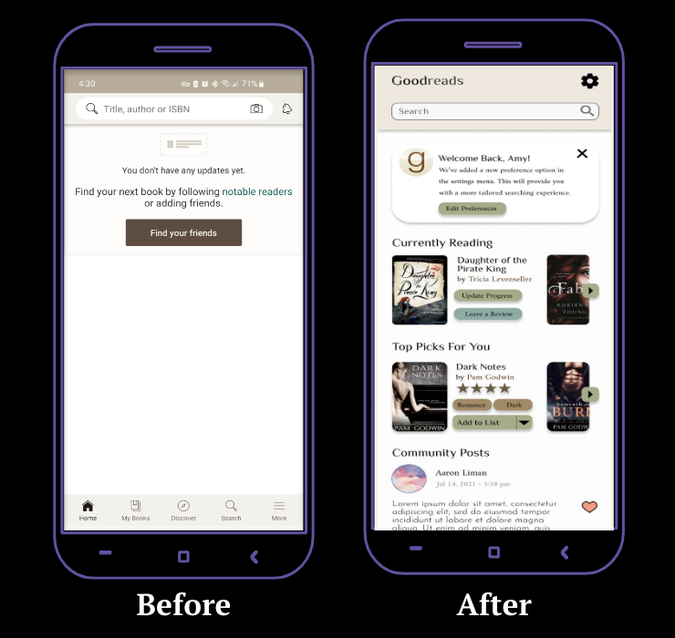
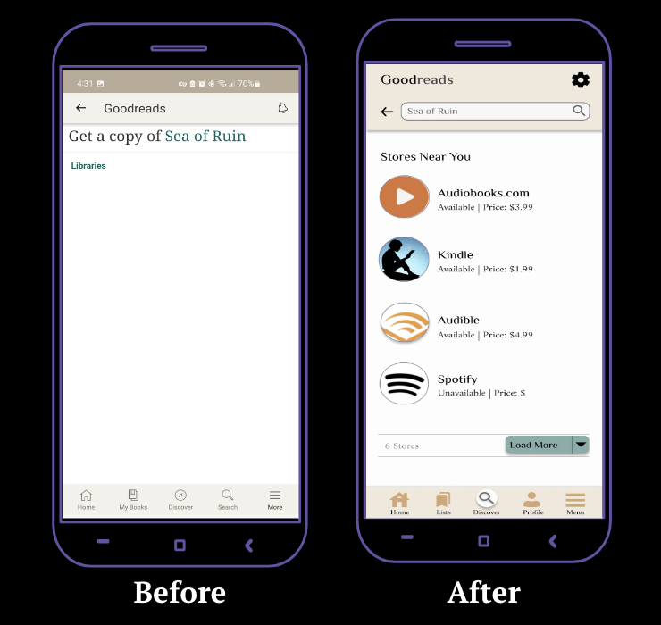
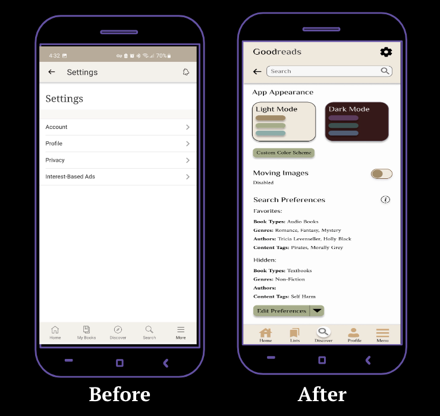
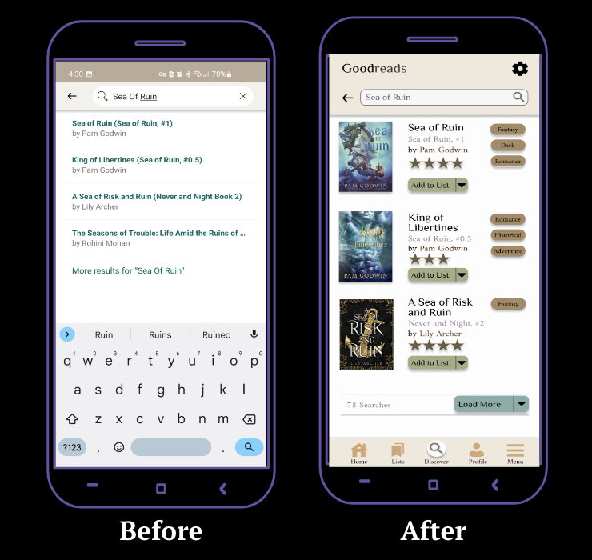
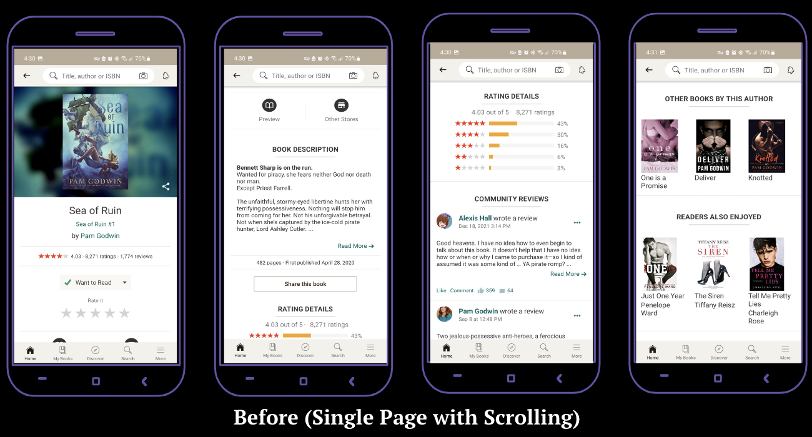 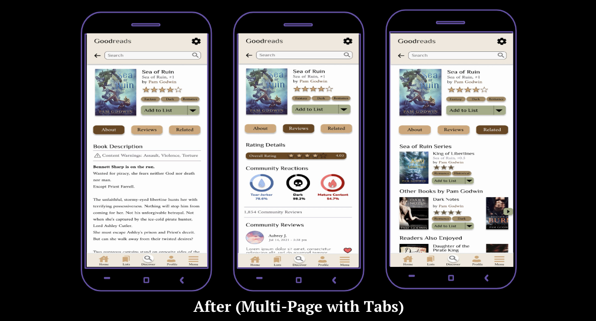
Through this project, I was able to conduct in-depth user interviews, collect data, create user flows, empathize using journey mapping, compile information architecture through a site map, and iterate on my designs to form an accessible and usable interface for Goodreads' book page.
As someone who tends to focus more on user experience research than user interface design, I encountered and overcame challenges during this project when it came to creating the different features, laying out the various screens, and navigating through Figma's platform.
Thanks to this unsolicited redesign of the Goodreads interface, I feel more confident in using Figma, designing user interfaces, and translating my ideas from lists into visuals.
Re-test using the final prototype and make necessary edits after performing usability testing with at least 15 more users.
Once it was determined that the new design's changes improved accessibility and usability for Goodreads' users, the redesign would be implemented and the new interface would be launched.